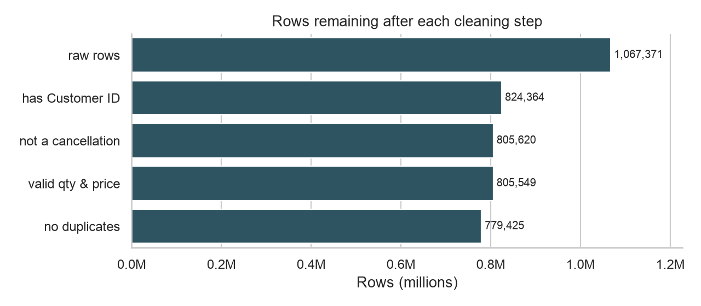
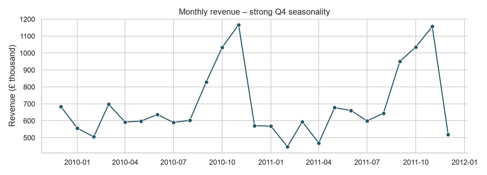
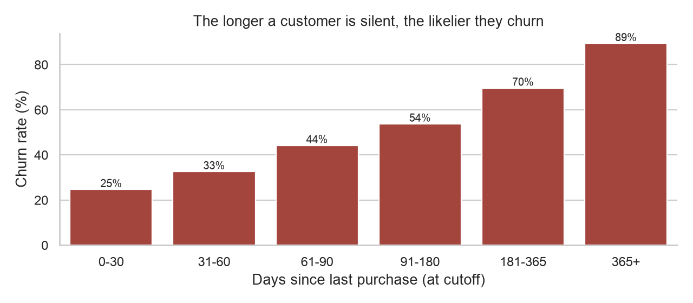
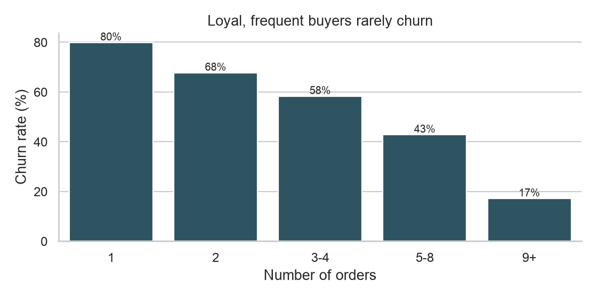
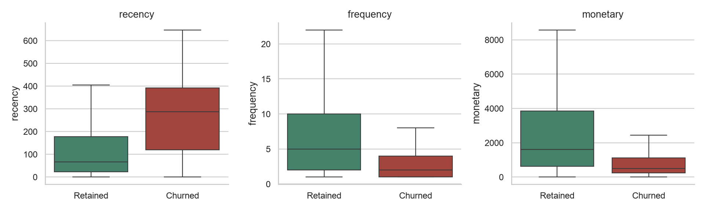

1. The problem: customers quietly leave
Imagine a shop owner who notices that a regular customer hasn't visited for months. By the time anyone realises, the customer is gone. In online shopping this is called churn: a customer stops buying.
Winning a new customer usually costs far more than keeping an existing one. So if we could predict who is likely to leave, the shop could send them a discount or a reminder before they disappear, and spend that effort on the customers worth the most money.
What this project does, in one breath
It reads a shop's past sales, gives every customer a churn probability (for example "83% likely to leave"), estimates how much money each customer would bring in next, and shows it all in an interactive dashboard.
2. Architecture: how the pieces fit together
The project is a small pipeline: data goes in at the top, passes through a series of steps, and the results come out as a dashboard. The key design idea is to train once, then serve. The slow, heavy work (cleaning, tuning, training) happens in one script and its answers are saved to files. The dashboard only reads those files, so it opens instantly and never retrains.
models.joblib (both fitted models) · customers_scored.csv (every customer's scores) · metrics.json (scores, confusion matrix, feature importance, best parameters)What each stage reads and writes
| Stage | Reads | Writes |
|---|---|---|
data_loader.py | the Excel file | transactions_clean.csv |
features.py | cleaned transactions | a table in memory (one row per customer) |
train.py | that table | models.joblib, customers_scored.csv, metrics.json |
app.py | the three artifact files | nothing (display only) |
01_eda.ipynb | cleaned transactions | reports/*.png |
How the two models work together
Neither model alone answers the business question. The classifier says how likely a customer is to leave; the regressor says how much they are worth. Multiplying them gives money at stake:
customer table ──► churn classifier ──► churn probability (p) ─┐
├─► expected revenue = (1 − p) × spend
customer table ──► revenue regressor ──► predicted spend if retained ┘ revenue at risk = p × spendDesign decisions worth knowing
Train once, serve many
Training takes a minute or two; opening the dashboard takes a second. Saving the results to artifacts/ separates the two, and also means anyone can inspect the numbers without running anything.
No peeking at the future
The cutoff date splits clues (past) from answers (future) in features.py, so the model can't cheat. Every later stage inherits that protection.
Honest scoring
Metrics come from a 20% hold-out that tuning never touched. Each customer's shown probability is out-of-fold: predicted by a model that never trained on them.
Repeatable
Every random choice uses seed 42, so re-running training gives the same splits and the same results.
Currency only at the edge
Models and saved files stay in pounds. The ₹ conversion (×110) is applied only when the dashboard displays numbers, and reversed before a what-if goes back to the model.
What-if is the one live call
Everything else on the dashboard is pre-computed. Moving a what-if slider is the only time the dashboard runs the saved classifier, on the spot, for one customer.
3. The data: a real online shop's sales log
We use the public UCI Online Retail II dataset. It records every item sold by a UK-based online gift shop between December 2009 and December 2011. Many of the shop's customers are wholesalers.
| Column | What it means |
|---|---|
Invoice | The order number (one order has many rows, one per product) |
StockCode, Description | Which product was bought |
Quantity, Price | How many, and the price of each (in British pounds) |
InvoiceDate | When it was bought |
Customer ID | Who bought it |
Country | Where they live |
Cleaning it up
Real data is messy. Before anything else we throw away rows that would mislead the model:
- rows with no customer ID, because we cannot tell who bought them;
- cancelled orders (invoices starting with "C"), because those are returns, not purchases;
- rows with a zero or negative quantity or price;
- exact duplicate rows.


4. Turning purchases into numbers: RFM
A model can't read a sales log. It needs a few numbers that describe each customer. The classic trio in marketing is RFM:
R: Recency
How many days since they last bought? Someone who bought yesterday is warm; someone who bought a year ago is going cold.
F: Frequency
How many separate orders have they placed? Regulars come back; one-time buyers often don't.
M: Monetary
How much money have they spent in total? Big spenders matter more to the business.
We add four more clues: tenure (how long they've been a customer), avg_order_value, avg_days_between_orders (how often they typically shop), and n_products (how many different products they've tried). That gives 7 numbers per customer.


5. How do we know who "churned"? The time split
To teach a model, we need examples where we already know the answer. So we pretend to stand at a past date, the cutoff (10 Sept 2011), and ask two questions:
RFM features, from purchases before the cutoff
next 90 days
- If a customer made no purchase in the 90 days after the cutoff → label them churned (1).
- If they bought something → retained (0), and we also record how much they spent.
Why not just use all the data at once?
That would be like letting a student see the exam answers while studying. If the "features" included purchases from the same 90 days we're trying to predict, the model would look brilliant but be useless on real, unseen customers. Keeping the past (clues) and the future (answer) strictly apart is called avoiding data leakage.
Result: 56.6% of customers churned, so the two groups are fairly balanced.
6. The model: XGBoost
We use XGBoost, a very popular and accurate algorithm for tables of numbers. Here's the idea without any maths:
A decision tree is a flowchart of yes/no questions, like "Has this customer been silent for over 200 days? Yes → has she ordered more than 5 times? No → likely to churn." One small tree is a weak predictor. XGBoost builds hundreds of small trees, one after another, where each new tree focuses on fixing the mistakes of the previous ones, then adds up all their votes.
Numbers above are illustrative, to show the idea.
We split customers into 80% for training and 20% held back for testing. The model never sees the 20% while learning, so its score on them is an honest estimate of how it would do on new customers.
Which clues matter most?
| Feature | Importance |
|---|---|
| Recency | 32% |
| Frequency | 25% |
| Monetary | 12% |
| Avg. days between orders | 10% |
| Number of products | 9% |
| Tenure | 7% |
| Avg. order value | 5% |
This is how the model "identifies churn indicators": recency and frequency are by far the strongest warning signs.
7. Tuning: making the model better
Step A: class weights (handling imbalance)
If one outcome is rare, a lazy model can score well by always guessing the common one. A class weight tells the model "mistakes on the rare group count extra". We try four weights (scale_pos_weight) and keep the one with the best cross-validated score (1.15).
Step B: hyperparameter search
A model has settings, like how deep each tree can grow, how fast it learns, and how many trees to build. These "knobs" are called hyperparameters. Instead of guessing, we run a randomised search: try 40 random combinations, test each with 5-fold cross-validation (train on 4/5 of the data, test on the other 1/5, five times over), and keep the best.
| Setting | Before | After search |
|---|---|---|
| Trees | 300 | 150 |
| Learning rate | 0.05 | 0.03 |
| Data sampled per tree | 80% | 60% |
| Features sampled per tree | 80% | 60% |
| Min. child weight / gamma / L2 penalty | defaults (1 / 0 / 1) | 3 / 2 / 1 |
The tuned model is simpler (fewer trees, more regularisation) and scores better: cross-validated PR-AUC rose from 0.809 to 0.822.
8. How good is it?
Scored on the 1,057 customers the model never saw:
The scorecard, customer by customer
Why accuracy isn't the headline: it hides which mistakes the model makes. A false alarm costs a needless discount; a missed churner costs a lost customer. Precision and recall show both sides.

9. From "who will leave" to "how much money is at stake"
Knowing a customer might leave isn't enough; a ₹500 customer and a ₹5 lakh customer need different attention. So there's a second model (an XGBoost regressor) that predicts how much a customer would spend in the next 90 days if they stay. Then:
expected revenue = (1 − churn probability) × predicted spend
revenue at risk = churn probability × predicted spendCustomers are then sorted into three risk tiers:
Finally, "high-value at risk" picks out High-risk customers who are also in the top quarter by historical spend: the ones worth a phone call.
A detail that keeps it honest
The churn probability shown for each customer comes from out-of-fold prediction: the model that scored that customer never saw them during training. Otherwise the dashboard would flatter itself.
10. The dashboard
Run streamlit run app.py and open localhost:8501. Four tabs:
| Overview | Headline numbers, customers by risk tier, forecast revenue per tier |
| Model performance | All the scores above, feature importance, confusion matrix, precision-recall curve |
| High-risk segments | RFM scatter plot coloured by risk, plus a downloadable "call these first" list |
| Customer lookup | Pick a customer, see their risk meter, and use sliders for a what-if: "what if they'd ordered 3 more times?" |
All money is shown in Indian rupees (₹). The data is in pounds, so values are multiplied by a fixed rate of 110 for display only; the models themselves still work in pounds.
11. Where everything lives
src/data_loader.pyLoads the Excel file and applies the cleaning rules. Caches the result.src/features.pyBuilds the RFM features, the churn label and the future-revenue value, using the cutoff-date split.src/train.pyTunes class weight and hyperparameters, trains both models, evaluates on the hold-out set, scores every customer and saves everything toartifacts/.notebooks/01_eda.ipynbExploratory analysis with Seaborn charts (saved inreports/).app.pyThe Streamlit dashboard;assets/style.cssholds its look and animations.
Run it yourself
pip install -r requirements.txt # on macOS also: brew install libomp
python -m src.train # trains and writes artifacts/
streamlit run app.py # opens the dashboardTools used
Python · Pandas and NumPy for data wrangling · Scikit-Learn for splitting data, cross-validation and metrics · XGBoost for the models · Seaborn and Matplotlib for charts · Streamlit for the dashboard.
12. What this project does not claim
- "Churn" is a definition, not a fact. It means "no purchase in 90 days". In a seasonal gift shop, someone who buys every December might be labelled churned in September.
- One cutoff date. The model is tested on a single time split; testing across several dates would be more convincing.
- The revenue forecast is rough. Spending is very uneven (a few huge wholesalers), so predicted amounts can be off by a lot for individual customers.
- The exchange rate is fixed at ₹110 per £1 for display, not a live rate.
- It's 2009–2011 data. It demonstrates the method; it says nothing about today's shoppers.